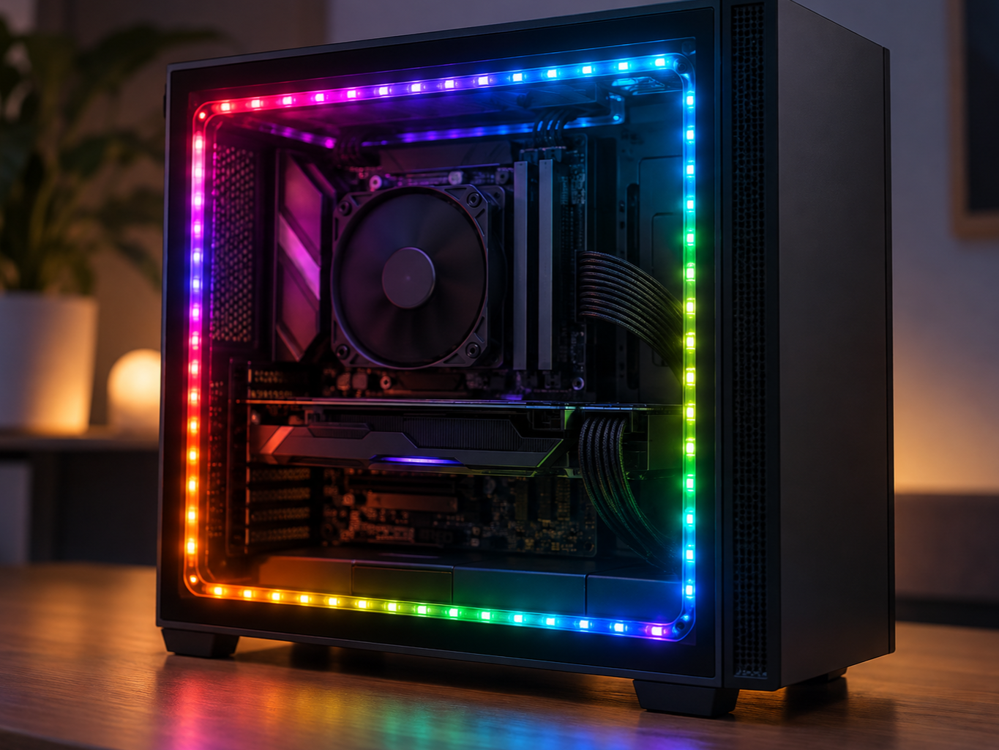
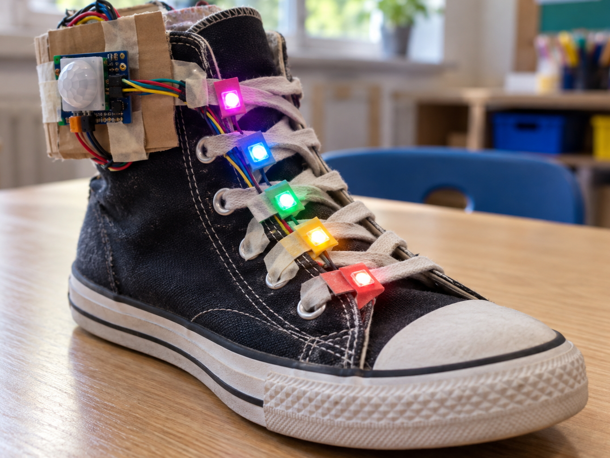

Progress bar
DetectMeasure progress
DecideHow many pixels to fill
DoLight the strip
A NeoPixel is a full-colour LED with a tiny controller built into it.
One data wire carries colour instructions, and each pixel passes the remaining instructions onwards.
The 3.3 V-compatible JST breakout shown here can connect directly to a Pi or Pico.


import board
import neopixel
pixels = neopixel.NeoPixel(board.D18, 1)
pixels[0] = (255, 0, 80)from machine import Pin
from neopixel import NeoPixel
pixels = NeoPixel(Pin(28), 1)
pixels[0] = (255, 0, 80)
pixels.write()